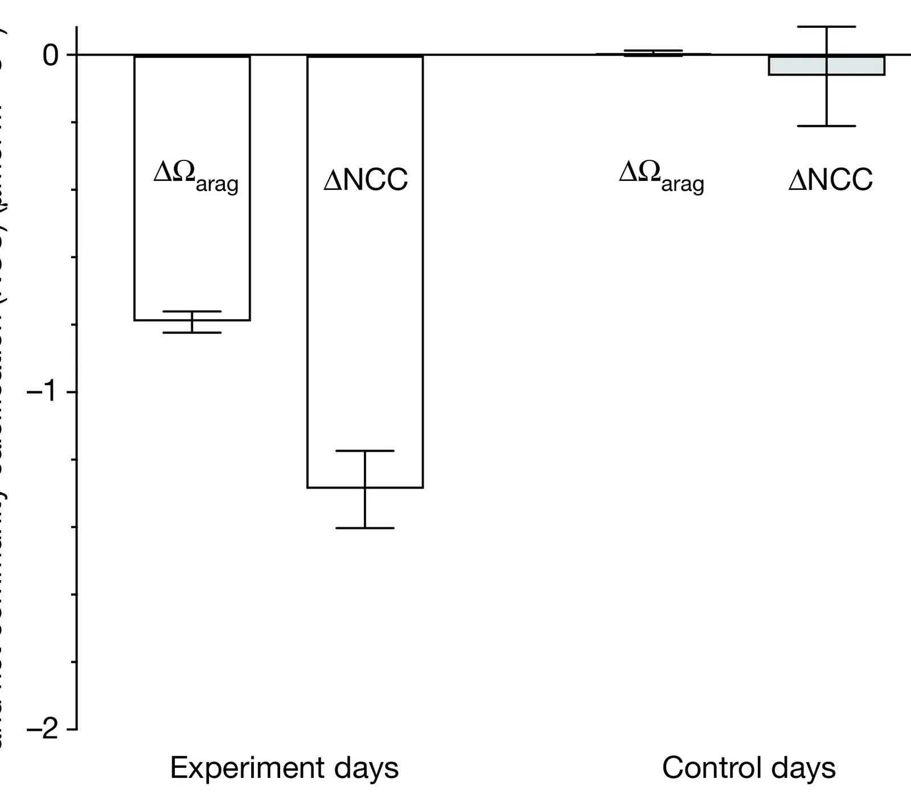

Carbon dioxide addition to coral reef waters suppresses net community calcification
Key finding. Adding carbon dioxide to the waters flowing over a natural coral reef, in an in situ enrichment experiment without artificial confinement, suppressed net community calcification.

What question did this paper ask?
Ocean acidification is expected to harm coral reefs by lowering the saturation state of aragonite, the mineral corals build skeletons from. Almost all the evidence for this came from experiments on individual species held in tanks.
A reef, though, is a community, and its net accretion is the balance of calcification, bioerosion, and dissolution across many organisms interacting. This paper asked whether the effect holds at the scale that actually determines whether a reef persists — measured on a real reef, under natural light, flow, and temperature.
What did we find?
The experiment enriched CO2 in seawater flowing over an intact reef community in place, rather than isolating organisms in tanks, so the response measured is the community's own rather than a sum of individual species' responses.
Net community calcification declined under the added CO2, confirming at community scale what tank experiments had indicated for individual calcifiers.
The underlying mechanism is the reduction in aragonite saturation state and in the carbonate ion concentration needed to maintain the carbonate structure of the reef.
Reduced calcification does not act alone. Combined with increased bioerosion and dissolution, it may push reefs into a state of net loss during this century.
Why does it matter?
The result closes a genuine gap in the evidence. Predicting what happens to reef ecosystems requires community- and ecosystem-scale responses, and until these experiments the field was extrapolating from individual organisms in artificial conditions.
The method matters as much as the number. Manipulating the chemistry of a natural reef without enclosing it made it possible to test the hypothesis where it actually applies, and that experimental approach is reusable for questions beyond acidification.
Reefs feed millions of people, protect coastlines, and generate billions of dollars in tourism annually, so a change in the direction of net accretion is not an ecological detail.
Citation, data, and code
Rebecca Albright, Yuichiro Takeshita, David A. Koweek, Aaron Ninokawa, Kennedy Wolfe, Tanya Rivlin, Yana Nebuchina, Jordan Young, and Ken Caldeira (2018). Carbon dioxide addition to coral reef waters suppresses net community calcification. Nature 555, 516-519.